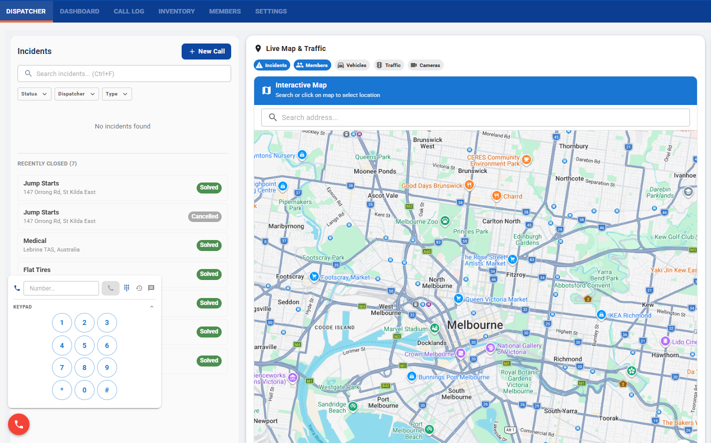
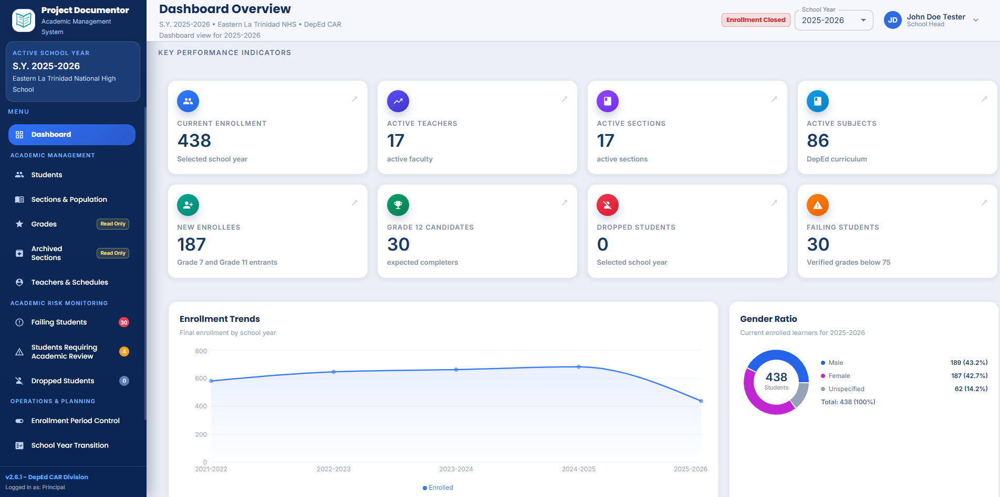
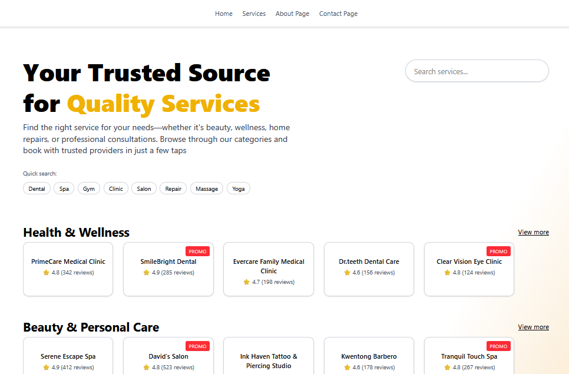
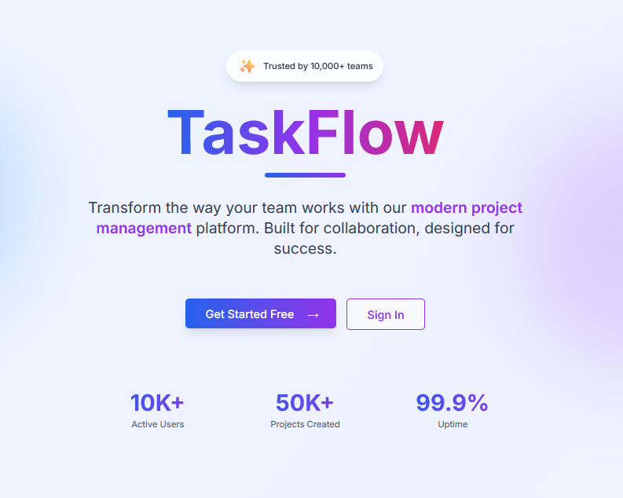

01 / 03Featured · Web + backend
Volunteer Dispatch System
A full-stack dispatch platform for coordinating volunteers and service requests.
Project archive
A collection of applications, systems, and experiments I've built across web, mobile, backend, and automation.
Showing 3 documented projects.

01 / 03Featured · Web + backend
A full-stack dispatch platform for coordinating volunteers and service requests.

02 / 03Featured · Web + backend
A full-stack platform for managing online enrollment, student records, academic management, administrative workflows, dashboards, and reporting.
View Project
03 / 03Featured · Web + mobile
A web and mobile platform for service discovery, customer bookings, authentication, scheduling, and customer and merchant dashboards.

04 / 05Web application
A project management platform concept focused on team collaboration and organizing project work.
No project screenshot is available in this repository yet.
In Development · Web + automation
An in-development application for generating resumes and cover letters from job descriptions.
No documented projects match this category yet.